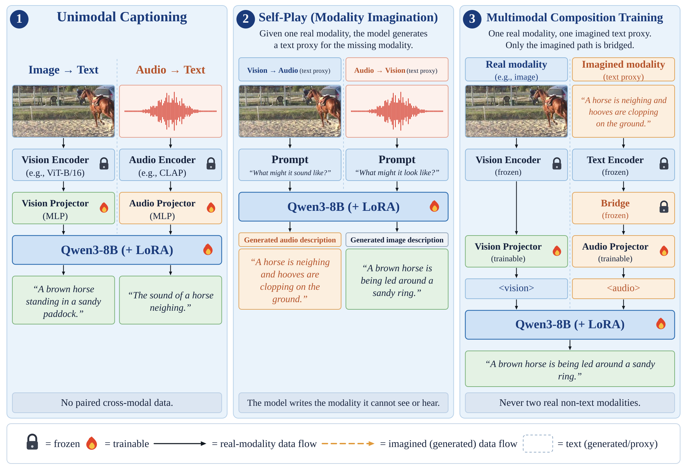
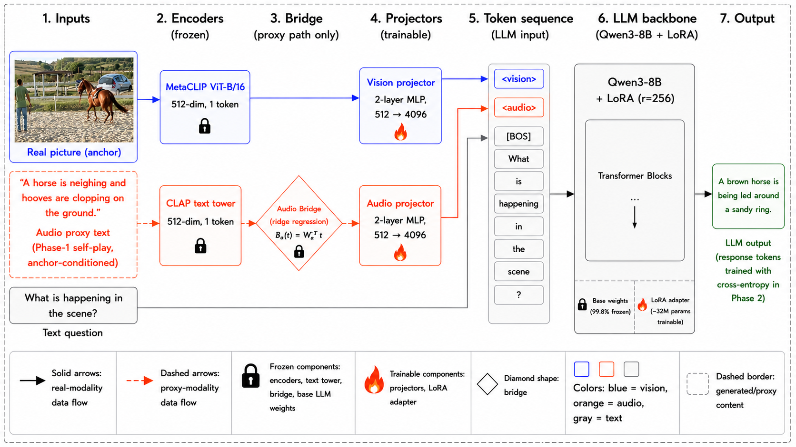
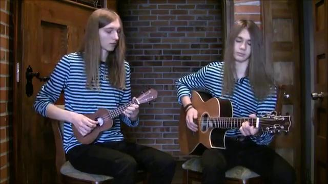
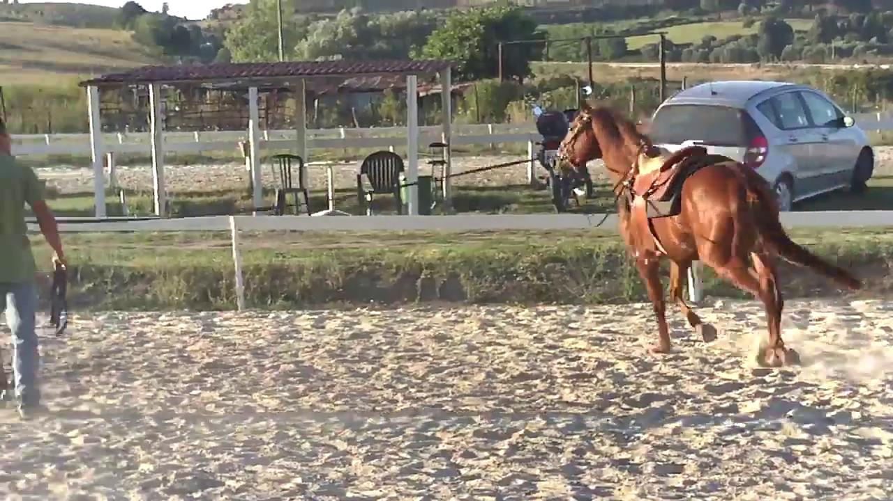

Training Multimodal LLMs Without Paired Cross-Modal Data
1University of California, Riverside 2Amazon

Large multimodal models have achieved remarkable progress by scaling model capacity and training on massive paired multimodal data. However, this paradigm introduces a fundamental bottleneck: aligned multimodal datasets are expensive to curate, difficult to scale across diverse modality combinations, and increasingly constrain further progress. We introduce Modality Self-Play (MSP), a training framework for multimodal foundation models based on proxy-mediated modality composition. Instead of relying on paired cross-modal data, MSP uses anchor-supporting proxy textual descriptions of unseen modalities as semantic bridges during training. Given an observed modality (e.g., image or audio), the model generates proxy descriptions for complementary unseen modalities, which are then encoded and aligned with the observed modality through learned bridges, enabling cross-modal interaction without real paired non-text supervision.
Our central hypothesis is that proxy text, combined with contrastively trained pretrained encoders, provides sufficient semantic structure for multimodal composition to emerge. We show that MSP enables zero-shot modality composition: models trained only with a real anchor modality and accompanying proxy descriptions can integrate and reason over multiple modalities at inference time despite never observing real paired non-text data during training. Empirically, MSP achieves state-of-the-art or competitive performance on multiple multimodal benchmarks. Ablation studies further demonstrate that learned bridges improve alignment, while anchor-supporting proxy descriptions enable effective cross-modal composition. MSP removes the need for real paired non-text (e.g., audio-vision) supervision, while continuing to rely on modality-text pairs, pretrained contrastive encoders, and modality-distribution bridge calibration.
A model that has only ever seen images, and only ever heard sounds — never the two together — can still learn to reason over both at once. It gets there by writing down, in words, what the missing modality would be.
Teaching a model to reason across modalities normally means collecting data where those modalities appear together: the same recording, seen and heard. That data is expensive, hard to scale, and the cost grows combinatorially as modalities are added. MSP removes that requirement.
During training every sample carries exactly one real modality — an image or a sound, never both. For whatever is missing, the model is asked what it would be, and its own answer is used in that slot. The description is text, so a frozen contrastive text encoder can read it; a small frozen bridge then moves that text embedding into the region of the space where real audio or real vision features live, and the result enters the language model through the same interface a real modality would use.
Why it works. The training signal is anchor consistency, not literal reconstruction of the held-out scene. A proxy that is wrong about the specific scene but compatible with what the model actually observed still teaches the composition. The qualitative examples below include two cases of exactly this.
Each modality gets its own projector into the language model, trained on ordinary modality–text pairs. Encoders stay frozen; projectors and LoRA adapters train. No paired cross-modal data.
The frozen Phase-1 model is shown one real modality and asked what the other would be. Its answer becomes the text proxy. Generated once, then cached.
One real modality plus a proxy for the missing one. Only the proxy passes through the bridge. Never two real non-text modalities.
The text-encoder and modality-encoder outputs of a contrastive encoder lie in related but shifted regions of a shared space — the modality gap. Feeding text features straight into a projector trained on modality features would be a distribution mismatch. So MSP fits a linear map by ridge regression on 1,000 caption–modality samples (500 train / 500 held out), freezes it, and uses it for the rest of training:
Wm = (T⊤T + λI)−1 T⊤R Bm(t) = Wm⊤t λ = 1.0
One bridge per modality, fit once before Phase 2 and frozen thereafter. It is worth +2.67 on AVQA and +7.05 on MUSIC-AVQA over using proxies without it.
Some source datasets do contain both modalities. MSP never uses both halves of such a sample: each one is assigned to either its audio or its vision, and is never revisited through the other. The paper calls this the one-real-anchor rule, and it is what makes the no-paired-data claim hold at the sample level rather than just the dataset level.

<vision> and <audio> token slots, and Qwen3-8B with LoRA adapters. Every modality is a single 512-dim token.Each example shows a real anchor in one modality and the proxy text the Phase-1 model generated for the other. The held-out ground truth is shown for context only — it is never used to generate the proxy.

Audio clip of a ukulele and guitar playing simultaneously.
“A red acoustic guitar and blue ukulele on a wooden stage. The guitarist strums chords while the ukulele player plucks strings.”
Two musicians on stage; acoustic guitar and ukulele playing together.

Image of a brown horse in a sandy ring with a person leading it.
“A horse is neighing and hooves are clopping on the ground.”
Horse neighing and hooves clopping on hard ground (audio held out).
These proxies describe a different scene from the one held out, yet remain compatible with the real anchor. MSP still benefits from them, because the training signal is anchor consistency rather than literal reconstruction.
Engine humming with tires rolling over pavement.
“A silver car speeds down a curvy mountain road at sunrise.”
The real scene is a white double-decker bus on a highway; the proxy invents a silver car on a mountain road. Both descriptions are consistent with the engine + tires audio.
Ducks calling near water.
“A dog grasping a duck.”
The real scene shows ducks in water; the proxy describes a different scene that shares the duck object but introduces a dog. The audio (duck calls) remains consistent with both interpretations.
Zero-shot throughout — MSP is never fine-tuned on these benchmarks, and their training splits are never used. Baselines were allowed paired data but, like MSP, did not fine-tune for these benchmarks.
| Method | Params | Accuracy |
|---|---|---|
| ImageBind-LLM | 7B | 39.72 |
| X-InstructBLIP | 13B | 44.50 |
| ChatBridge | 13B | 43.00 |
| OneLLM | 7B | 47.60 |
| Qwen2.5-VL | 7B | 47.75 |
| GPT-4o | — | 50.08 |
| MSP (r = 512) | 8B | 65.65 |
| Method | Params | Accuracy |
|---|---|---|
| X-InstructBLIP (zero-shot) | 7B | 44.29 |
| ImageBind-LLM (zero-shot) | 7B | 55.00 |
| PSAC (trained on AVQA) | — | 78.60 |
| HGA (trained on AVQA) | — | 82.20 |
| HCRN (trained on AVQA) | — | 82.50 |
| MSP (r = 256) | 8B | 85.73 |
| Method | Params | Accuracy |
|---|---|---|
| AnyGPT | 7B | 18.04 |
| VITA-1.5 | 7B | 33.40 |
| MiniCPM-o 2.6 | 7B | 40.50 |
| Baichuan-Omni-1.5 | 7B | 42.90 |
| Gemini-1.5-Pro | — | 42.91 |
| MSP (r = 256) | 8B | 43.26 |
| Qwen2.5-Omni | 7B | 56.13 |
| Configuration | AVQA | MUSIC-AVQA |
|---|---|---|
| Without proxy and bridge | 70.21 | 45.75 |
| With proxy, without bridge | 82.91 (+12.70) | 58.60 (+12.85) |
| With proxy and bridge | 85.58 (+2.67) | 65.65 (+7.05) |
Removed: the need for real paired non-text supervision — audio and vision originating from the same underlying source.
Still relied upon: modality–text pairs, pretrained contrastive encoders, and modality-distribution bridge calibration.
We therefore do not claim the absence of cross-modal priors. Contrastively pretrained encoders already carry transferable cross-modal structure, and MSP leans on it deliberately — proxy text does not replicate an unseen modality, it provides a shared semantic space through which representations can be aligned.
Limitations. MSP depends on the quality and semantic consistency of its proxies; noisy or weakly aligned proxies degrade performance. It inherits the coverage limitations and biases of the contrastive encoders it builds on. And proxies are a training-time scaffold — real modalities still outperform their proxy counterparts at inference, every drop significant at p < 10−6.
@inproceedings{moseley2026msp,
title = {{MSP}: Modality Self-Play for Training Multimodal {LLM}s
Without Paired Cross-Modal Data},
author = {Moseley, Robert and Reza, Md Kaykobad and Patil, Ameya and
Ayrapetian, Edward and Asif, M. Salman},
booktitle = {Advances in Neural Information Processing Systems (NeurIPS)},
year = {2026}
}